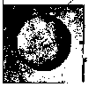
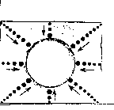
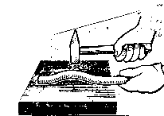
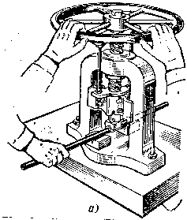
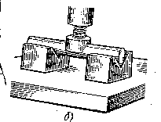
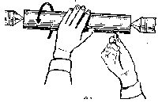

ПРАВКА И РИХТОВКА МЕТАЛЛА. ТЕХНИКА ПРАВКИ И РИХТОВКИ
1. Кривизну деталей проверяют на глаз или по зазору между плитой и уложенной не ней деталью;
2. Изогнутые места отмечают мелом;
4. При правке важно выбирать места, по которым следует наносить удары;
5. Сила ударов должна быть соразмерной с величиной кривизны и постоянно уменьшаться по мере перехода от наибольшего изгиба к наименьшему.
| Правка листового материала | Полосового материала | Пруткового материала |
|---|---|---|
|
1. Волнистость обводят мелом или мягким карандашом; 2. Заготовку располагают на плите выпуклостью к верху; 3. Удары молотком наносят от краёв к середине выпуклостью; 4. Удары молотком наносят часто, но не сильно, особенно перед окончанием правки; 5. Не допускается нанесение нескольких ударов по одному и тому же месту т.к. это может привести к образованию нового выпуклого участка; 6. Под ударами молотка материал вытягивается и выравнивается.   |
1. На выпуклой стороне мелом отмечают границы изгибов;
2. Полосу располагают на правильной плите выпуклостью вверх;
3. Удары наносят по выпуклым частям, регулируя их силу в зависимости от толщины полосы и величины кривизны: чем больше искривление и толще полоса, тем сильнее должны быть удары;
4. По мере выправления полосы силу ударов ослабляют и чаще переворачивают полосу с одной стороны на другую до полного выправления.
|
1. На выпуклой стороне прутка мелом отмечают границы изгибов;
2. Пруток укладывают на плиту или наковальню выпуклостью к верху;
3. Удары молотком наносят по выпуклой части краёв изгиба к середине, регулируя силу ударов в зависимости от диаметра прутка и величины изгиба;
4. По мере выправления изгиба силу ударов уменьшают и поворачивают пруток вокруг оси заканчивают правку лёгкими ударами;
5. Если пруток имеет несколько изгибов, сначала правят ближайшие к концам, а затем расположенные в середине.
 |
Результаты правки (прямолинейность заготовки) проверяют на глаз, а более точно на разметочной плите по просвету или наложением линейки на полосу.
ПРАВКА ВАЛОВ
1. Вал укладывают на призмы.
2. Нажим осуществляют винтом.
3. После снятия вала качество правки можно проверять следующими способами:
а. на глаз – при повороте валика вокруг оси;
б. по просвету – путем прокатывания валика по проверочной плите;
в. в центре с помощью мела.

Приём правки вала на ручном винтовом прессе.

Положение наконечника на винте.

Проверка валика в центрах.